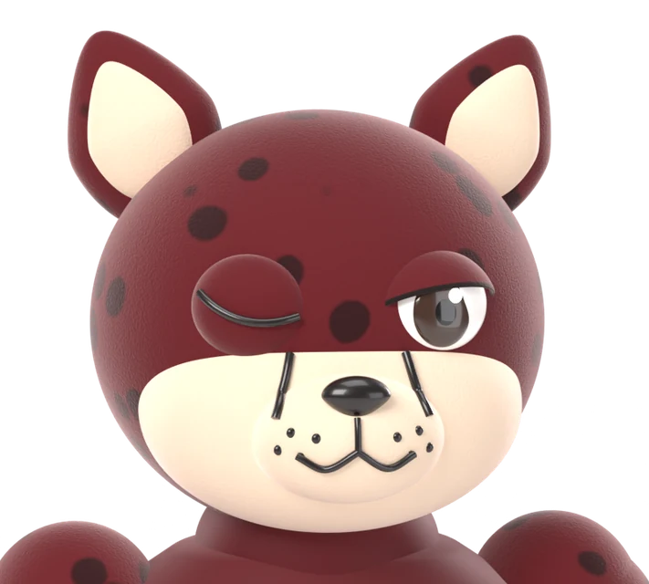
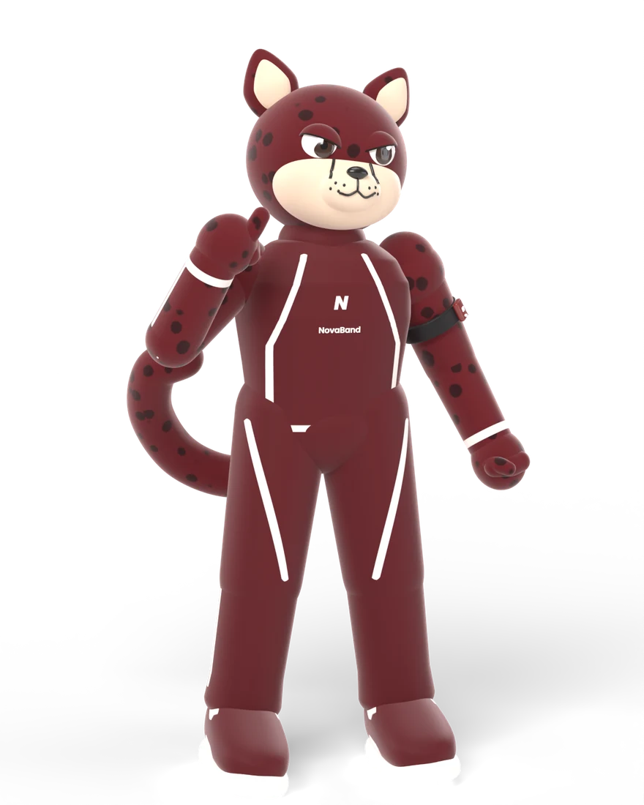

Nova-Band
Kuesioner Pelari · ±5 menit
Bantu kami membangun wearable lari yang tepat.
Nova-Band adalah wearable lengan atas untuk memantau detak jantung dan performa lari secara real-time. Jawabanmu dipakai untuk penelitian tim SMA Negeri 1 Surakarta (ISIF 2026).

Bagikan ke teman pelari
Pindai QR ini atau kirim link-nya: novaband-id.web.app/kuesioner.html


Terima kasih! 🏃
Jawabanmu sudah tersimpan dan sangat membantu pengembangan Nova-Band.
Lihat Nova-Band